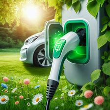

INSTALACIONES ELÉCTRICAS INTERIORES.
Interior
 Cargador de coche
Material eléctrico
Prácticas
INFRAESTRUCTURA PARA LA RECARGA DE VEHÍCULOS ELÉCTRICOS
cargado coche
cargado coche
Conectores
Modos de carga
SPL
Coche eléctrico
Esquemas de la instalación
Preinstalación
 Interior
Interior
 Material eléctrico
Material eléctrico
 Prácticas
Prácticas